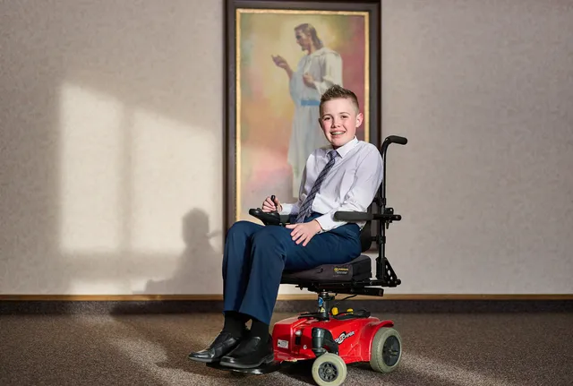

5 MINUTE TRAINING
The Following Passages are from "As a Little Child," by President Jeffrey R. Holland (April 2025 general conference)
Read the complete talkIt should be noted that even before Christ’s birth, King Benjamin’s farewell sermon included this profound comment on a child’s humility. It says, 'The natural man is an enemy to God, … and will be, forever and ever, unless he … becometh a saint through the atonement of Christ the Lord, and becometh as a child, submissive, … humble, … full of love, … even as a child [responds] to his father.'”
Now, there are obviously some infantile inclinations we don’t encourage. Twenty-five years ago, my then-three-year-old grandson bit his five-year-old sister on the arm. My son-in-law, caring for the children that night, frantically taught his daughter all the lessons on forgiveness he could think of, concluding that her little brother probably didn’t even know what a bite on the arm felt like. That ill-conceived fatherly comment worked for about a minute, maybe a minute and a half, until there was a window-rattling cry from the children’s bedroom, where my granddaughter calmly called out, 'He does now.'”
"On January 5, 2025—91 days ago—Easton Darrin Jolley had the Aaronic Priesthood conferred upon him and was ordained a deacon in The Church of Jesus Christ of Latter-day Saints.
Easton had longed to pass the sacrament of the Lord’s Supper for as long as he could remember. But this sacred opportunity was accompanied by the stomach-wrenching fear that he would fail, that he would fall, that he would be teased or embarrass himself and his family.

You see, Easton has a rare and very destructive illness, Ullrich congenital muscular dystrophy. It has progressively filled his young life with formidable challenges while shattering his hopes and dreams for the future. He will soon be in a wheelchair permanently. His family does not talk about what awaits him after that.
The Sunday after his ordination, Easton would pass the sacrament for the first time. And his privately held motivation was that he could present himself and these sacred emblems to his father, who was the bishop of the ward. In anticipating that task, he had begged and pled and wept and begged, extracting a guarantee that no one, no one, would try to help him. For many reasons, private to himself, he needed to do this alone and unaided.
After the priest had broken the bread and blessed it—an emblem representing the broken body of Christ—Easton, with his broken body, limped up to receive his tray. However, there were three sizable steps from the meetinghouse floor to the elevated stand. So, after receiving his tray, he stretched up as high as he could and placed his tray on the surface above the handrail. Then, sitting down on one of the higher steps, with both hands he pulled his right leg up onto the first step. Then he pulled his left leg onto the same step, and so on up until, arduously, he was at the summit of his personal three-step Mount Everest.
He then maneuvered himself to a structural post by which he could climb to a standing position. He made his way back to the tray. A few more steps and he stood in front of the bishop, his father, who, with tears drenching his eyes and flooding down his face, had to restrain himself from embracing this perfectly courageous and faithful son. And Easton, with relief and a broad smile consuming his face, might well have said, 'I have glorified [my father and] have finished the work [he gave] me to do.'"
Faith, loyalty, purity, trust, honor, and, in the end, love for that father he so wished to please. These and a dozen other qualities make us also say, 'Whosoever … shall humble himself as this little child, the same is greatest in the kingdom of heaven.'"